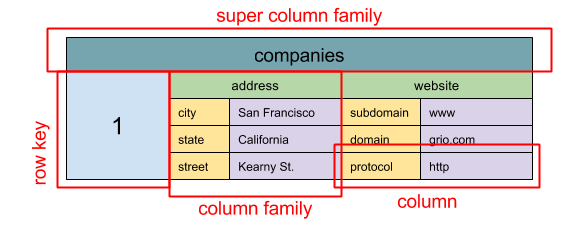
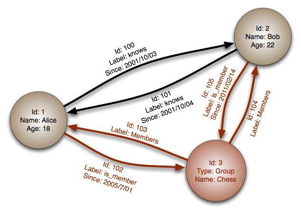
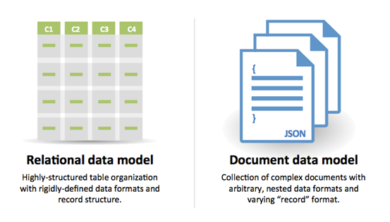

The System Design Primer — Study Path
How relational databases scale, what ACID actually guarantees, and the four families of NoSQL store — plus a straight answer to "SQL or NoSQL?"
A relational database like SQL is a collection of data items organized in tables. What makes it trustworthy under concurrent use is a set of guarantees called ACID:
There are six standard techniques for scaling a relational database beyond a single box: master-slave replication, master-master replication, federation, sharding, denormalization, and SQL tuning.
The master serves both reads and writes, replicating every write to one or more slaves, which serve only reads. Slaves can replicate onward to further slaves in a tree. If the master goes offline, the system can keep running in read-only mode until a slave is promoted to master, or a new master is provisioned.
Both masters serve reads and writes and coordinate with each other on writes. If either master goes down, the system keeps operating with both reads and writes available. Active-active failover (covered in Module 03) is another name for this pattern.
Federation (or functional partitioning) splits one monolithic database into several by function — for example, separate forums, users, and products databases. Each one sees less read/write traffic and therefore less replication lag. Smaller databases also fit more comfortably in memory, improving cache locality — and because there's no single master serializing every write, you can write in parallel for higher throughput.
Sharding spreads data across multiple databases so each one manages only a subset — for example, a users table split so that as the user count grows, you add more shards to the cluster. A common split is by the user's last-name initial or geographic location.
Like federation, sharding reduces read/write traffic per node, reduces replication, improves cache hits, and shrinks index size (faster queries). There's still no single master serializing writes, so you can write in parallel for higher throughput. If one shard goes down the others keep serving — though you'll still want replication within each shard to avoid data loss.
Denormalization trades some write performance for better read performance, by writing redundant copies of data into multiple tables to avoid expensive joins. Some RDBMSes (PostgreSQL, Oracle) support materialized views that handle storing those redundant copies and keeping them consistent for you.
Once data is spread across federation or sharding, joins across data centers get expensive — denormalization can sidestep the need for them entirely. In most systems reads outnumber writes 100:1 or even 1000:1, so a read that triggers a complex join can be very costly in disk time.
SQL tuning is a field unto itself. The starting discipline is always the same: benchmark (simulate high load with a tool like ab) and profile (turn on the slow query log to find real bottlenecks) before you optimize anything.
CHAR instead of VARCHAR for fixed-length fields — CHAR allows fast random access, while VARCHAR has to find the end of a string first.TEXT for large blocks of text (blog posts); it also supports boolean search and stores a pointer on disk to the actual block.INT for large numbers up to 2³² (4 billion).DECIMAL for currency, to avoid floating-point rounding errors.BLOBs directly — store a location/pointer to the object instead.VARCHAR(255) is the largest length countable in an 8-bit number, which often maximizes byte use in some RDBMSes.NOT NULL where applicable — it can improve search performance.SELECT, GROUP BY, ORDER BY, JOIN are good index candidates.Denormalize where performance genuinely demands it.
Break a table up by moving its "hot" rows into a separate table so they're more likely to stay in memory.
In some cases the query cache itself can become a source of performance problems worth tuning.
NoSQL data is represented as a key-value store, document store, wide column store, or graph database. Data is denormalized, and joins are usually done in application code rather than the database. Most NoSQL stores skip true ACID transactions in favor of eventual consistency (Module 03).
The usual shorthand for NoSQL's guarantees is BASE — in contrast to the CAP theorem, BASE chooses availability over consistency:
Abstraction: hash table
A key-value store generally gives O(1) reads and writes, and is often backed by memory or SSD. Keys can be kept in lexicographic order for efficient range retrieval, and metadata can ride along with a value.
Key-value stores are fast and simple — a natural fit for rapidly-changing data such as an in-memory cache layer. Because the operation set is limited, more complexity shifts to the application layer when you need anything fancier. A key-value store is also the foundation other, more complex stores (document stores, sometimes graph databases) are built on.
Abstraction: key-value store with documents stored as values
A document store centers on documents (XML, JSON, binary, etc.), where one document holds all the information for a given object, and the store can query based on the document's internal structure. (Many key-value stores also support metadata on a value, blurring this line.) Documents can be organized by collections, tags, metadata, or directories — and, unlike rows in a rigid schema, documents in the same collection can have completely different fields.
MongoDB and CouchDB offer SQL-like query languages on top of this model; DynamoDB supports both key-value and document access. Document stores favor flexibility and fit data that changes shape occasionally.

Abstraction: nested map ColumnFamily<RowKey, Columns<ColKey, Value, Timestamp>>
The basic unit is a column — a name/value pair. Columns group into column families (roughly analogous to a SQL table), and super column families group those further. Each column is reachable independently by a row key, and columns sharing a row key form a row. Every value carries a timestamp for versioning and conflict resolution.
Google's Bigtable was the first wide column store; it influenced HBase (common in the Hadoop ecosystem) and Facebook's Cassandra. All three keep keys in lexicographic order for efficient range retrieval, and all three are built for very large datasets with high availability and high scalability.

Abstraction: graph
Each node is a record, and each arc is a relationship between two nodes — built to represent complex, many-to-many relationships efficiently. Graph databases shine on data models like a social network, where relationships are the point. They're relatively new and less widely used, so tooling and hiring can be harder to find; many graph databases are only reachable through a REST API (Module 10).
Explanation of BASE terminology · NoSQL databases: a survey and decision guidance · NoSQL patterns

| Reasons for SQL | Reasons for NoSQL |
|---|---|
| Structured data, strict schema | Semi-structured data, dynamic/flexible schema |
| Relational data, need for complex joins | Non-relational data, no need for complex joins |
| Transactions | Storing many TB (or PB) of data |
| Clear, established patterns for scaling | Very data-intensive workloads |
| More established tooling, community, talent | Very high throughput for IOPS |
| Index lookups are very fast | — |
Data that's typically a good fit for NoSQL: rapid ingest of clickstream/log data, leaderboard or scoring data, temporary data like a shopping cart, frequently-accessed ("hot") tables, and metadata/lookup tables.